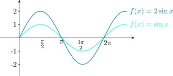
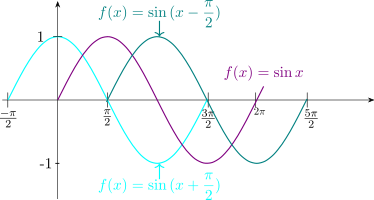
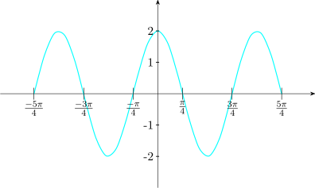

12.5 Period, Amplitude, Phase Shift
12.5.1 Period
A function \(f\) is called periodic if there exists a positive number \(\alpha \) such that
\[f(x + \alpha ) = f(x)\]
for all values \(x\) in the domain of \(f\).
The smallest such value \(\alpha \) is called the period of the function
\begin {align*} \sin (x + 2\pi ) & = \sin x \cos 2\pi + \cos x \sin 2\pi \\ & = \sin x \cdot (1) + \cos x \cdot (0)\\ & = \sin x \end {align*}
and
\begin {align*} \cos (x + 2\pi ) & = \cos x\cos 2\pi - \sin x \sin 2\pi \\ & = \cos x \cdot (1) - \sin x \cdot (0)\\ & = \cos x \end {align*}
\begin {align*} \sin (x + 2\pi ) & = \sin x\\ \cos (x + 2\pi ) & = \cos x \end {align*}
Thus the sine function and the cosine function are periodic and both have the period \(2\pi \).
Similarly
\(\sin (x - 2\pi ) = \sin x \)
\(\cos (x - 2\pi ) = \cos x\)
Note that the period of the tangent function is \(\pi \).
Consider the equation \(\hspace {0.2cm} \sin x = \dfrac {1}{2}.\hspace {0.3cm}\) Here we see that \(\hspace {0.2cm} x = \dfrac {\pi }{6}\hspace {0.2cm}\) is a solution to the equation.
But since \(\hspace {0.2cm} \sin ( x - 2\pi ) = \sin x = \dfrac {1}{2}\hspace {0.2cm}\) we see that \(\hspace {0.2cm} x - 2\pi = \dfrac {\pi }{6},\hspace {0.2cm}\) which gives \(\hspace {0.2cm} x = \dfrac {\pi }{6} + 2\pi \).
Also \(\hspace {0.2cm} \sin (x - 4\pi ) = \sin x = \dfrac {1}{2}\)
\(\implies \hspace {0.3cm} x - 4\pi = \dfrac {\pi }{6}\)
\(\implies \hspace {0.3cm} x = \dfrac {\pi }{6} + 4\pi .\hspace {0.2cm}\) in fact for any positive integer \(k\).
\(\sin ( x - 2k\pi ) = \sin x = \dfrac {1}{2}\)
\(\implies \hspace {0.3cm} x - 2k\pi = \dfrac {\pi }{6}\)
\(\implies \hspace {0.3cm} x = \dfrac {\pi }{6} + 2k\pi \)
Hence \(\hspace {0.2cm} \dfrac {\pi }{6} + 2k\pi \hspace {0.2cm}\) is also a solution to the equation \(\hspace {0.2cm} \sin x = \dfrac {1}{2}\).
Similarly, \(\hspace {0.3cm} \sin ( x + 2\pi ) = \sin x = \dfrac {1}{2}\)
\(\implies \hspace {0.3cm} x + 2\pi = \dfrac {\pi }{6}\)
\(\implies \hspace {0.3cm} x = \dfrac {\pi }{6}- 2\pi \)
So that in the same way if it is a positive integer
\(\sin ( x + 2\pi k ) = \sin x = \dfrac {1}{2}\)
\(\implies \hspace {0.3cm} x + 2\pi k = \dfrac {\pi }{6}\)
\(\implies \hspace {0.3cm} x = \dfrac {\pi }{6} - 2\pi k\hspace {0.2cm}\) is also a solution to the equation \(\hspace {0.2cm} \sin x = \dfrac {1}{2}\)
Combining the two solutions i.e
\[x = \dfrac {\pi }{6} + 2k\pi \hspace {1cm} \text {and}\hspace {1cm} x = \dfrac {\pi }{6} - 2k\pi \]
We conclude that for any integer \(n,\hspace {0.4cm} x = \dfrac {\pi }{6} + 2n\pi \hspace {0.2cm}\) is a solution to the equation \(\hspace {0.2cm} \sin x = \dfrac {1}{2}\).
Similarly, for the angle in the second quadrant \(\hspace {0.2cm} x = \dfrac {5\pi }{6}\hspace {0.2cm}\) is a solution to the equation. Hence by the
periodicity of sine functions we see that for any integer \(n,\hspace {0.5cm} x = \dfrac {5\pi }{6} + 2n\pi \hspace {0.2cm}\) is also a solution to the equation
\(\hspace {0.2cm} \sin x = \dfrac {1}{2}\).
Therefore the most general solution to the equation \(\sin x=\dfrac {1}{2}\) is given by
\[ x =\hspace {0.2cm} \left .\begin {aligned} \dfrac {\pi }{6} + 2n\pi \\\\ \dfrac {5\pi }{6} + 2n\pi \\ \end {aligned} \right \}\hspace {0.2cm} n \in \mathbb {Z} \]
Solution.
\(\tan \theta = 2\sin \theta \)
\begin {align*} \implies \hspace {0.3cm} \dfrac {\sin \theta }{\cos \theta } & = 2\sin \theta \\ \sin \theta & = 2\sin \theta \cos \theta \\ \implies \hspace {0.3cm} \sin \theta ( 1 - 2\cos \theta ) & = 0\ \end {align*}
\(\implies \hspace {0.4cm} \sin \theta = 0\hspace {0.5cm}\) or \(\hspace {0.5cm} \cos \theta = \dfrac {1}{2}\)
or
general solution
\begin {align*} \sin \theta = 0 \hspace {0.5cm} \implies \hspace {0.5cm} \theta & = 0\\ \theta & = \pi \\\\ \theta & = \left .\begin {aligned} 0 & + 2n\pi \\\\ \pi & + 2n\pi \\ \end {aligned} \right \} \hspace {0.2cm} n\in \mathbb {Z} \end {align*}
Therefore, \(\hspace {0.4cm} \theta = \pi n \hspace {0.2cm}, \hspace {0.3cm} n \in \mathbb {Z}\)
\(\cos \theta = \dfrac {1}{2}\)
\(\theta = \dfrac {\pi }{3}\hspace {0.4cm}1^{\text {st}}\hspace {0.2cm}\text {quadrant}\)
\(\theta = \dfrac {5\pi }{3}\hspace {0.4cm}4^{\text {th}}\hspace {0.2cm}\text {quadrant}\)
\[\cos \theta = \dfrac {1}{2} \hspace {0.3cm} \implies \hspace {0.5cm} \theta = \left .\begin {aligned} \dfrac {\pi }{3} & + 2n\pi \\\\ \dfrac {5\pi }{3} & + 2n\pi \\ \end {aligned} \right \}\hspace {0.2cm} n \in \mathbb {Z}\]
Hence the general solution to the equation \(\hspace {0.3cm} \tan \theta = 2\sin \theta \hspace {0.2cm}\) is \[\theta = \hspace {0.3cm} \left .\begin {aligned} & n\pi \\\\ \dfrac {\pi }{3} & + 2n\pi \\\\ \dfrac {5\pi }{3} & + 2n\pi \\ \end {aligned} \right \}\hspace {0.2cm} n \in \mathbb {Z}\]
Given that \(\hspace {0.2cm} 0 \leq \theta \leq 2\pi .\hspace {0.2cm}\) Find all the values of \(\theta \) such that \[2\cos 4\theta = \sqrt {3}\]
Solution.
\(2\cos 4\theta = \sqrt {3}\hspace {0.3cm} \implies \hspace {0.3cm} \cos 4\theta = \dfrac {\sqrt {3}}{2}\)
\begin {align*} 4\theta & = \hspace {0.3cm}\left .\begin {aligned} \dfrac {\pi }{6} & + 2n\pi \\\\ \dfrac {11\pi }{6}& + 2n\pi \\ \end {aligned} \right \}\hspace {0.2cm} n \in \mathbb {Z}\\\\\\ \implies \hspace {0.4cm} \theta & = \hspace {0.3cm}\left .\begin {aligned} & \dfrac {\dfrac {\pi }{6} + 2n\pi }{4}\\\\ & \dfrac {\dfrac {11\pi }{6} + 2n\pi }{4}\\ \end {aligned} \right \}\hspace {0.2cm} n \in \mathbb {Z} \end {align*}
\[\implies \hspace {0.4cm} \theta = \hspace {0.3cm}\left .\begin {aligned} & \dfrac {\pi + 12n\pi }{24}\\\\ & \dfrac {11\pi + 12n\pi }{24}\\ \end {aligned} \right \}\hspace {0.2cm} n \in \mathbb {Z} \]
\(n = 0\)
\(\theta = \dfrac {\pi }{24}\hspace {0.3cm}, \hspace {0.5cm} \dfrac {\pi }{24}\)
\(n = 1\)
\(\theta = \dfrac {13\pi }{24}\hspace {0.3cm}, \hspace {0.5cm} \dfrac {23\pi }{24}\)
\(n = 2\)
\(\theta = \dfrac {25\pi }{24}\hspace {0.3cm}, \hspace {0.5cm} \dfrac {35\pi }{24}\)
\(n = 3\)
\(\theta = \dfrac {37\pi }{24}\hspace {0.3cm}, \hspace {0.5cm} \dfrac {47\pi }{24}\)
\[\therefore \hspace {0.5cm} \theta = \dfrac {\pi }{24}, \hspace {0.5cm} \dfrac {11\pi }{24}, \hspace {0.5cm} \dfrac {13\pi }{24}, \hspace {0.5cm} \dfrac {23\pi }{24}, \hspace {0.5cm} \dfrac {25\pi }{24}, \hspace {0.5cm} \dfrac {35\pi }{24}, \hspace {0.5cm} \dfrac {37\pi }{24}, \hspace {0.5cm} \dfrac {47\pi }{24}, \hspace {0.5cm}\]
Consider the graph of \(\hspace {0.2cm} f(x) = \sin bx\hspace {0.2cm}\) for \(b> 0\).
One cycle of the graph is completed as \(bx\) increases from 0 to \(2\pi \).
When \(\hspace {0.2cm} bx = 0, \hspace {0.3cm} x = 0\hspace {0.2cm}\) and when \(\hspace {0.2cm} bx = 2\pi , \hspace {0.2cm} x = \dfrac {2\pi }{b}\)
Similarly, for \(g(x) = \cos bx\).
Therefore the period of \(\hspace {0.2cm} f(x) = \sin bx\hspace {0.2cm}\) and of \(\hspace {0.2cm} g(x) = \cos bx\hspace {0.2cm}\) when \(b> 0\) is given by \(\dfrac {2\pi }{b}\).
12.5.2 Amplitude
Definition 12.30. The amplitude of a periodic function is half the distance between its maximum and its minimum value: \[\text {amplitude}=\frac {\text {max}-\text {min}}{2} .\] It measures how far the curve swings either side of its centre line, not how high it reaches.
For \(f(x)=3\sin x\) the maximum is \(3\) and the minimum \(-3\), so the amplitude is \(3\); the maximum is attained when \(\sin x=1\), that is at \(x=\frac {\pi }{2}\).
For \(f(x)=-7\sin x\) the amplitude is \(\left |-7\right |=7\), the maximum \(7\) being attained when \(\sin x=-1\), at \(x=\frac {3\pi }{2}\).
Note 12.31. Amplitude is a distance, so it is never negative — which is why the absolute value appears. The negative sign in \(-7\sin x\) does not shrink the swing; it flips the curve upside down, so the graph is that of \(7\sin x\) reflected in the \(x\)-axis.
Note too that amplitude is not the same as the maximum value. For \(f(x)=2+3\sin x\) the maximum is \(5\) and the minimum \(-1\), so the amplitude is \(\frac {5-(-1)}{2}=3\), not \(5\): adding \(2\) raises the whole curve without widening its swing. Defining amplitude as ”the maximum the function attains” is only correct when the curve is centred on the \(x\)-axis, which is the case in every example here but not in general.
In general the amplitude of the graph of the function \(\hspace {0.2cm} f(x) = a\sin x\hspace {0.2cm}\) or that of
\(\hspace {0.2cm} g(x) = a \cos x\hspace {0.2cm}\) is given by \(\hspace {0.2cm}\left |a\right |\).

We have seen that the graph of \(\hspace {0.2cm} f(x) = \sin \Big (x - \dfrac {\pi }{2}\Big )\hspace {0.2cm}\) is the graph of \(\hspace {0.2cm} f(x) = \sin x\hspace {0.2cm}\) shifted \(\dfrac {\pi }{2}\) units to the right.

The number \(\dfrac {\pi }{2}\) in both cases is called the phase shift. In general the phase shift of the function \(\hspace {0.2cm} f(x) = \sin (x - c)\hspace {0.2cm}\) or \(g(x) = \cos (x - c)\hspace {0.2cm}\) is \(\left |c\right |\). If \(c> 0\) the shift is to the right and if \(c<0\) the shift is to the left.
Theorem 12.32 (Period, amplitude and phase shift). For \[f(x)=a\sin \left (bx+c\right )+d \hspace {0.8cm}\text {or}\hspace {0.8cm} f(x)=a\cos \left (bx+c\right )+d,\hspace {0.6cm} b>0,\] \[\text {amplitude}=\left |a\right |,\hspace {0.9cm} \text {period}=\frac {2\pi }{b},\hspace {0.9cm} \text {phase shift}=-\frac {c}{b},\hspace {0.9cm} \text {vertical shift}=d .\] A negative phase shift moves the curve to the left, a positive one to the right.
Note 12.33. Each constant does one job, and it is worth seeing why.
\(a\) stretches the curve vertically, so it scales the swing: amplitude \(\left |a\right |\).
\(b\) compresses it horizontally. The parent function completes one cycle as its argument runs through \(2\pi \), so \(bx\) must run through \(2\pi \), which takes \(x\) only \(\frac {2\pi }{b}\) — a larger \(b\) means a shorter period and more cycles in the same space.
\(c\) shifts it sideways. Factorising, \(bx+c=b\left (x+\frac {c}{b}\right )\), and replacing \(x\) by \(x+\frac {c}{b}\) moves a graph left by \(\frac {c}{b}\). That is why the shift is \(-\frac {c}{b}\) rather than \(-c\), and why the sign feels backwards: adding inside the bracket moves the curve the opposite way to what the plus sign suggests.
\(d\) raises the whole curve, moving the centre line to \(y=d\) without touching the amplitude.
The practical rule for the shift is the one used below: set the whole bracket to zero and solve. That locates where the parent curve’s starting point has moved to, and it works without remembering any sign convention.
Find the period, the amplitude and the shift of the function \[f(x) = 2\sin \Big (2x + \dfrac {\pi }{2}\Big )\] and hence sketch the graph of \(f\).
Solution.
- \(\hspace {0.3cm}\) Amplitude: \(\hspace {0.3cm} \left |2\right | = 2\)
- \(\hspace {0.3cm}\) Period: \(\hspace {0.3cm} \dfrac {2\pi }{2}= \pi \hspace {0.6cm}\Bigg |\hspace {0.5cm} 2x = 2\pi \implies x = \dfrac {2\pi }{2} = \pi \)
- \(\hspace {0.3cm}\) Shift: \(\hspace {0.3cm} 2x + \dfrac {\pi }{2} = 0\)
\(\hspace {0.3cm} \implies 2x = \dfrac {-\pi }{2} \hspace {0.3cm} \implies \hspace {0.3cm} x = -\dfrac {\pi }{4}\)
Therefore, shift is \(\left |-\dfrac {\pi }{4}\right | = \dfrac {\pi }{4}\hspace {0.2cm}\) to the left.

Find the period and the shift of the function \[g(x) = 2 - 5\cos \pi \Big (x - \dfrac {1}{2}\Big )\]
Solution.
- \(\hspace {0.3cm}\) Amplitude \( = \left |-5\right | = 5\)
- \(\hspace {0.3cm}\) Period: \(\hspace {0.2cm} \pi x = 2\pi \hspace {0.3cm}\implies \hspace {0.3cm} x = 2\)
- \(\hspace {0.3cm}\) Shift: \(\hspace {0.3cm} \pi x - \dfrac {\pi }{2} = 0 \hspace {0.3cm} \implies \hspace {0.3cm} \pi x = \dfrac {\pi }{2}\)
\(\hspace {0.3cm} \implies \hspace {0.3cm} x = \dfrac {1}{2}\)
Therefore, the shift is \(\dfrac {1}{2}\) to the right.
Questions on this section
Stuck on something here? Ask below and it stays attached to this topic.